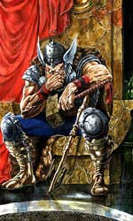

Скандинавська і німецька міфології
Північна міфологія (точніше - скандинавська) - представляє самостійну і багато що розвинулася гілку германської міфології, яка, в свою чергу, в основних рисах сходить до найдавнішої праиндоевропейской історії. Ще недавно в науці панував погляд, що майже вся скандинавська міфологічна система, що реалізувалася, наприклад, в піснях Старшої і розповідях Молодшій Едди, може і повинна вважатися загальнонімецької.
Такого погляду тримався засновник німецької міфології як науки Яків Грімм; за ним пішли Вольф, Зімроком і інші, які шукали в німецьких народних казках, забобони і т. п. підтвердження своїх висновків. В даний час, однак, ця точка зору може вважатися спростованої.
Сильно розхитані також довіру до висновків так званої порівняльної міфології, яка, користуючись методом, виробленим на грунті порівняльного мовознавства, бачила майже у всіх німецьких міфологічних образах відображення праіндоєвропейської міфу, в найбільш чистій формі зберігся в міфах ведичних. Висновки цієї школи, не залишаючи майже ніякого простору міфологічному творчості відокремлених народів, припускають для індоєвропейського пранарода таку високу ступінь культурного розвитку, який він не мав і мати не міг.
За останні десятиліття тому все сильніше висувається необхідність строго історичного вивчення німецької міфології, що виходить з критики джерел і намагається з'ясувати поступове зростання і ускладнення міфологічних уявлень в межах німецького тільки світу. Робота в цьому напрямку не забарилася дати кілька дуже цінних, тепер уже загальновизнаних у науці результатів, що визначають, між іншим, ставлення скандинавської міфології до загальнонімецької.
При оцінці цього відносини потрібно мати на увазі, що скандинавські джерела, дуже багаті за змістом і представляють широко розвинену, детально розроблену систему, все порівняно пізнього походження: жодна з пісень Старшої Едди НЕ сходить до часу давнішого, ніж IX століття. Епоха вікінгів (I?-? століття), що позначає собою перелом в культурному житті Півночі взагалі, справила глибокий переворот і в релігійному житті скандинавських народностей, розкривши доступ до них впливу ззовні. Впливу між іншим і християнському, який ішов, з одного боку, з Північної Німеччини, з іншого, і до того ж головним чином, - з Англії та Ірландії.
Під сильним впливом цих впливів язичницька Скандинавія знаходилася до самого введення християнства (?? століття); цілий ряд міфологічних образів і оповідань - наприклад, міфи про Рагнарека, тобто загибелі богів - виник саме в цю пору, коли придворні співаки-скальди, до яких перейшла головну роль в поезії Півночі, вільно розпоряджалися успадкованим міфічним матеріалом, як матеріалом літературним; вони внесли в нього нове освітлення і розуміння міфу, під впливом змінених культурних умов створюючи нові образи богів, видозмінюючи їх взаємини, довільно комбінуючи їх між собою.
Таке вільне ставлення до міфічного переказу було тим більш можливо, що віра в древніх богів в цей час була вже сильно підірвана. Літературна обробка міфологічного матеріалу тривала і після прийняття християнства, по крайней мере в Ісландії, де своєрідні культурні умови охороняли давні перекази від переслідувань з боку християнської церкви; але перекази ці зазнали тут ще більших спотворень, поки нарешті не були приведені в систему християнським вченим Сноррі Стурлусоном (1178 - 1241), автором так званої Молодшій Едди, перша частина якої представляє не що інше, як підручник міфології для скальдів.
Наскільки сильно тут був вплив чужих почав, виявляється, наприклад, з того, що встановлюються 12 вищих божеств в паралель до 12 олімпійським богам. Зберігшись майже тільки в подібних пізніх переказах і обробках, скандинавський міфологічний матеріал підлягає ретельній критичній розробці; лише з очищення його від пізніших нашарувань його можна залучати до роз'яснення питань загальнонімецької міфології.
У критиці північній міфології деякі вчені зайшли занадто далеко, вбачаючи в багатьох скандинавських міфах лише своєрідні обробки мотивів середньовічних християнських легенд, почасти грецьких і римських міфів, що проникли в Скандинавію в пізню язичницьку і ранню християнську пору, головним чином з Англії та Ірландії, частково з Франції і Італії. На думку цих вчених, історія Бальдра відбиває в собі історію Христа в зв'язку з переданням про смерть Ахілла; бог Локі - не що інше як середньовічний Люцифер, що перейняв крилаті сандалі від Меркурія; на Tope відбилися деякі перекази про Геракла; космогонічні міфи, що виразилися в мовленні Вельви (Вёлоспо, першої пісні Старшої Едди), склалися в пізню пору з елементів, що зберігають риси вавілонської космології, і т.п.
На крайності в подібних поглядах і на ненадійність наукових прийомів, за допомогою яких вони виникли, вказали, між іншим, А. Н. Веселовський, Ф. Іонсон, Водсков і інші вчені. Більш надійні точки опори дає матеріал німецький і англосаксонський. Бідніший за обсягом і змістом, він почасти більш давнє скандинавського і в більшості випадків передає німецькі народні вірування безпосередньо, тобто у формі, не затемненій пізнішої літературної обробкою.
Головні джерела його: твори римських і грецьких істориків (починаючи вже з Юлія Цезаря); житія святих; розпорядження урядів і церкви, спрямовані проти залишків язичницьких звичаїв і забобонів; народні перекази, казки і обряди, частково збереглися до теперішнього часу. На вивченні цього матеріалу зосереджується наукова робота в даний час. Виявилося, що про струнку, детально розробленою міфологічної системі загальнонімецької не може бути мови.
Лише чотири божества безсумнівно належать прагерманском порі, тобто відомі майже всім німцям, а саме: бог неба і світла Tiwaz (скандію. Туr, ньому. Zio), бог грози Thonaraz (скандію. Thorr, ньому. Donar), бог вітру Wodanaz ( скандію. Odhinn, ньому. Wuotan), богиня землі і родючості Frija (скандію. Frigg, ньому. Frija). Але відносне значення їх в різних областях німецького світу по-різному; їх культи розвиваються незалежно один від одного в межах обласних амфіктіоніями - на зразок грецьких, - висувають на перший план то одне, то інше божество. Розвинувшись в одній області, культ божества міг потім перейти і в інші. Яскравим прикладом такого переходу може служити історія поширення культу Водана (Вотана, Одіна), яка провела в релігійному житті стародавнього германства - принаймні скандинавського - цілу революцію.
Найдавніше божество німецького Олімпу - тейваз Tiwaz (Туr, Zio), ім'я якого фонетично збігається з індійським Dyaus, грeческім ????, римським Jupiter, від кореня div - блищати, виблискувати. Ще в перші століття нашої ери він майже у всіх німців вважається верховним божеством, хоча з бога неба він в силу культурних умов, ймовірно, вже встиг перетворитися на бога війни, яким і залишається до кінця. Назва вівторка, запозичене германцями у римлян (dies Martis, mardi), перекладається як "день Тива" (скандію. Tysdagr; англ. Tuesday). Родоначальники німецьких племен інгвеонов, іствеонов і ермінонов отримали свої імена, ймовірно, від прізвиськ того ж божества. Подальший розвиток його в різних напрямках слід вбачати в богів Бальдре, Фрейе, Хеймдалля, Форсети і інших, що стали в Скандинавії поруч з Тюром після того, як останній був відсунутий на задній план. У найдавніше час культ Тива особливо процвітав на материку у суебов-семнонов, пізніше в Скандинавії. Найдавніше національне божество Скандинавії - бог грози Thоrr (нім. Donar), який за своїми функціями найближче підходив до грецького Зевсу, римському Юпітеру. У Норвегії він вважався верховним божеством, покровителем і захисником людини у всіх його починаннях; таким він перейшов і в Ісландію. Він лише частково був витіснений згодом Водану, культ якого в найдавнішу пору був зосереджений на Нижньому Рейні; у франків. Водан мав спочатку лише обмежене значення бога вітрів і ототожнюється з римським Меркурієм.
У міру того як висувалися прирейнские франки, на яких вперше і найбільш сильно позначився вплив вищої римської культури, розвиваються і розширюються уявлення про їх національному бога Водана, який стає тепер носієм і виразником вищого духовного розвитку, що йшов з півдня. У цьому новому освітленні він переходить до лангобардами на Ельбі, до саксам, данцям, нарешті, до Швеції і Скандинавію взагалі, де він відразу займає провідне становище верховного божества - але тільки в очах вищих верств суспільства, а не народу. Нижчі класи продовжують як і раніше поклонятися головним чином Тору і Фрей; вищий стан вустами своїх співаків-скальдів прославляє Одіна, як володаря всесвіту, батька богів, вершителя доль, бога неба і сонця, мудрості і поезії, носія і представника вищих духовних і моральних начал.
Коли, вже в християнську пору, міфологічні уявлення давніх наводяться в систему, Один природно стає центром останньої; навколо нього групуються, підкоряючись йому, всі інші божества, як його брати, сини і дочки. Це ж пізніше розвиток призвело на півночі до роздвоєння богів на два роду: асів (Один і його нащадки) і ванів (Ньорд, Фрейр, Фрейя); складаються оповіді про їхню боротьбу, про загибель богів і т.д. Пізньої самій порі зобов'язаний своїм виникненням і Локі, бог вогню, невідомий іншим німецьким народам; Браги, бог поезії скальдів, і інші. За зазначеними більш-менш ясними міфологічними образами лежить безмежний океан так званої "нижчої міфології", яка ховається в народних казках, обрядах і забобони і зосереджується, головним чином, на культі душ і демонів. Це - найдавніші шари релігійних вірувань всіх європейських народів: культ предків, культ будинкових, ельфів, інеїстих велетнів і інших, частково безформних і неясних, уособлень стихійних сил природи. Вони також наведені в скандинавської міфології в відому систему. Основою міфології Північної Європи послужили традиції народів, що належать до германо-скандинавської етнічної групи - голландців, датчан, німців, ісландців, норвежців і шведів; причому міфологія скандинавів представлена ??досить повно завдяки літературних пам'яток, створеним в дохристиянський період і дбайливо збереженим в Ісландії. Чималий і вельми своєрідний внесок в міфологію регіону внесли фіни, які стосуються фінно-угорської етнічної групи, але здавна проживають на Скандинавському півострові. В даний час всі ці традиції зазвичай об'єднують загальною назвою Північна міфологія.
Слід визнати, що міфологія Західної Європи щасливо уникнула сумну долю міфології балтійських слов'ян тільки тим, що була зафіксована в рукописах. Відомо, що після захоплення німцями західних провінцій Римської імперії класичне міфологічне спадщина греків і римлян зберігалося в монастирських бібліотеках разом з кельтськими літературними пам'ятниками. А безцінну спадщину північній міфології загубилося у віках тільки завдяки самовідданим ентузіастам зразок ісландського скальда, вченого і державного діяча Сноррі Стурлусона.
Стурлусон зібрав саги періоду вікінгів, приблизно з 750 по 1050 рік, коли сформувалася потужна традиція, пов'язана з подвигами головних богів - бога війни і покровителя дружин Одіна і бога Тора, який нещадно трощив ворогів своїм чарівним молотом-бумерангом Мьелльнір. Все ще вільні від впливу християнства, заповзятливі і відважні скандинави - предки сучасних датчан, ісландців, норвежців і шведів - йшли в море на пошуки видобутку і нових земель. Не дивно, що войовничі вікінги любили слухати перекази про подвиги одноокого Одіна. Верховний бог залучав скандинавів репутацією "батька доблесно полеглих в бою" і тим, що йому вдавалося доводити до екстазу шалених берсеркера, які в нестримної люті гризли щити і кидалися на ворога оголеними. Відповідно до одного з міфів, коли старий датський король Гаральд Синій Зуб (X століття) поскаржився на Одіна, то дарує, то відбирає удачу в бою, бог війни загадково вимовив: "Сірий вовк спостерігає за обителлю богів". Щоб зрозуміти сенс його слів, слід згадати одну з головних тем скандинавських міфів - навислої над богами і всім світом загрозу загибелі - Рагнарок. Один у що б це не стало прагнув зібрати дружину ейнхеріев, полеглих в бою відважних воїнів, для вирішальної битви богів з велетнями і чудовиськами в долині Вігрід, де майже всім їм судилося загинути. Самого Одіна чекала неминуча смерть у пащі гігантського вовка Фенрира, огидного нащадка бога вогню Локі і велетки Ангрбоди. Чи був задоволений Харальд Синьозубий відповіддю бога, сказати важко, оскільки міф закінчується тим, що Один, що правив королівської колісницею, скинув старого на землю й пробив нещасного мечем.
"Століття сокири, століття меча", який завершувався катастрофою Рагнарек, можливо, здавався суворим морським вовкам ідеалом життя справжніх чоловіків. Але ті з них, хто вважав за краще осісти в колоніях і стати селянином або торговцем, все ж більше шанували сина Одіна, бога грому і родючості Тора. Віра в Тора допомагала людям у вирішенні земних проблем, будь то нападу місцевих конунгів на селян або не в міру запопадливих християнських місіонерів на язичницькі храми. Особливою популярністю Тор мав серед ісландських колоністів, яких втекти з Південної Норвегії змусили подібні Одіну жорстокі правителі на зразок Еріка Кривава Сокира (X століття). Прихильність поселенців до культу Тора була настільки велика, що прізвища Торстен і Торолфа досі вважаються найпоширенішими в Ісландії. Тому цілком зрозуміло, чому до кінця епохи вікінгів Тор в пантеоні богів зайняв більш високе положення, ніж Один, і залишався верховним богом на протязі приблизно століття, після чого Скандинавія була звернена в християнство.
Пантеон германців і скандинавів
Згідно давньогерманської уявленням, на початку світобудови лежало взаємодія двох протилежних начал: перше з них - Муспельгейм, абсолютний верх, джерело вогню, світла, чоловіче начало; друге - Ніфльгейм, абсолютний низ, джерело холоду, жіноче начало. Від їх взаємодії з'явилися Імір і світова корова Аудумла. Корова лизала соляні камені і створила таким чином першого бога - Бурі; від нього пішов рід небесних богів - асів, головним з яких шанувався Один, бог Сонця. Крім нього виділялися Тор, бог грому і блискавки, небесний коваль, озброєний чарівним молотом Мьелльнір, Тюр, бог війни, Відар, бог ремісників-башмачників, Хед, сліпий бог долі, Локі, бог вогню. Аси на чолі з Одіном напали на велетня Имира, вбили його і з його тіла створили Землю: кістки стали горами, жили - річками, живіт - морем, волосся - лісом, череп - небесним склепінням, мозок - хмарами. Потім боги створили перших людей: з ясена - чоловіка на ім'я Аск, а з верби - жінку, назвавши її Ебла. Вони побудували для людей місто - Мидгард, щоб захистити їх від духів дикої природи, від велетнів - Етунов і від карликів - цвергов і гномів. Локі навчив людей рахунком, рун, виготовляти зброю, плести мережі. На небесах боги вирішили побудувати місто для себе - Асгард, для чого вони вступили в договір з одним велетнем; було вирішено нагородити велетня, якщо він побудує Асгард за один рік; йому були обіцяні Сонце, Місяць і дружина Одіна - Фрейя. Велетень будував місто з незвичайною швидкістю, перевозячи величезні камені на чарівному коні. Боги злякалися, скликали збори і на ньому звинуватили Локі в невдалому договорі. Локі змусили зробити все, щоб не дати виконати договір. Локі перетворився в кобилицю і повів велетенського коня. Велетень не виконав умов договору, не закінчив будівництва до кінця року. Локі ж тим часом тричі вагітніла і народив трьох хтонических істот: світового вовка Фенрира, світового змія Ермунганда і восьминогого коня Слейпнірі. Прудконогий кінь був узятий Одином, який став здійснювати на ньому щоденні поїздки по небу; одного разу на рік, 25 грудня, в день зимового сонцестояння, Один разом з Фреєю приїжджав на чарівному коні на Землю, обдаровуючи людей подарунками, а люди, зі свого боку, дякували бога жертвами, розвішували на вічнозелених ялинках. Від цієї древнегерманской традиції бере початок святкування Нового року. Ермунганд обплутав усю землю і кусав свій власний хвіст. У цьому образі германці метафорично передбачили ідею сферичності Землі.
Але найпохмуріша роль в майбутньому відводилася світовому вовкові Фенріру. Віщунки передбачили богам, що прийде день, коли вовк поглине їх усіх. Боги злякалися і вирішили захиститися від цього лиха. Тор викував міцну ланцюг, і боги прийшли до вовка, заявляючи, що хочуть випробувати його силу і просять одягнути на нього ланцюг. Вовк погодився, ланцюг була накинута на нього, але вовк з легкістю розірвав її. Боги прийшли в ще більший страх. Тор викував ще більш товсту і міцну ланцюг. Але в другому випробуванні Фенрир знову порвав її. Боги були в паніці, і їм допомогла Фрейя (за іншою версією - Фрігге), дружина Одіна. Вона сплела мотузку з усього, що є на землі - з волосся, жив, деревного лика та інших речей. З цієї мотузкою боги втретє прийшли до вовка, розохочували його, умовляючи піддатися третьому випробуванню. Вовк відмовлявся, але потім погодився на умови, що Тюр в якості гарантії покладе йому в пащу праву руку. Мотузка була надіта на шию Фенрира, він намагався її порвати, але марно, і тоді Фенрир відкусив руку Тюра. Вовк був прив'язаний до скелі, і боги на якийсь час убезпечили себе. У Одіна і Фрей (за іншою версією - Фрігге) був син на ім'я Бальдр. Ще при народженні мати взяла клятви у всього живого на землі, щоб ніщо не заподіяла шкоди її дитині. Правда, Фрейя не взяла клятви у слабкої рослини омели, що паразитує на дубі. Бальдр відрізнявся статтю, розумом, розсудливістю.
Одного разу боги зібралися на площі і до початку зборів розважалися метанням копій, стрільбою з лука в Бальдра, що стояв по пояс роздягненим і демонструє невразливість. І тут про все відає Локі зробив майже невагоме спис з омели і вклав його в руку сліпого бога Хеда. Той навмання метнув спис, воно пронизало наскрізь Бальдра, і син Одіна помер. Боги накинулися на Локі, після довгої погоні піймали його і прив'язали до скелі; над головою Локі прикріпили отруйних змій, від яких він повинен був померти повільної, болісною смертю. Дружина Локі намагалася полегшити страждання чоловіка, вона збирала отрута в чашу, але коли вона відверталася, щоб вилити з повної чаші отруту, отруйні краплі падали на обличчя Локі, він здригався, і разом з ним здригалася земля. Одного разу Локі здригнувся так сильно, що земля розкололася, виповз світовий змій Ермунганд, який став все спалювати вогнем свого подиху і отруювати отрутою. Спали пута зі світового вовка Фенрира, він відкрив свою гігантську пащу і став ковтати одного бога за іншим. Фенрир не зміг проковтнути лише ВІДАР, бога-башмачника. Відар настав черевиком з товстою підошвою на нижню щелепу вовка, а руками вперся в верхню і порвав пащу. Були вирвані назад проковтнуті вовком Один, Тор, Тюр і інші боги. Таким чином, після кінця світу, загибелі богів настав воскресіння. Потім був останній суд, і вся його справедливість пішли в Муспельгейм, а все грішні - в Ніфльгейм. Ідеї ??есхатології, воскресіння і загробного суду давніх германців передбачили християнські ідеї, і ця обставина пояснює схильність німців до християнства.